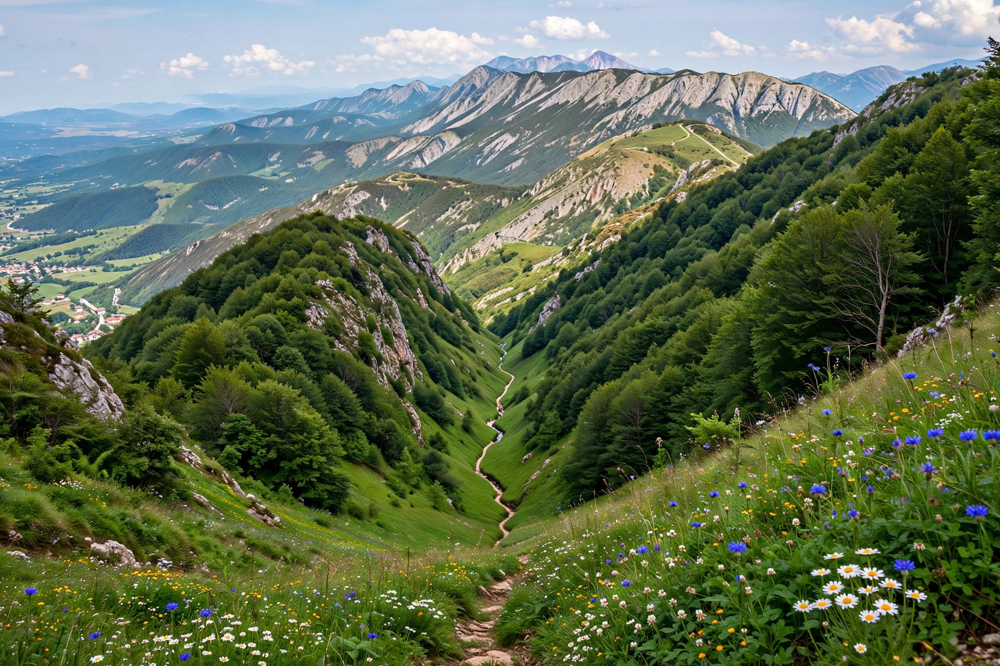

Battle of Kleidion
| Battle of Kleidion | |
|---|---|
| Date | 29 July 1014 |
| Location | Kleidion pass, Belasica mountains (modern Bulgaria/Greece border region) |
| Result | Decisive Byzantine victory |
| Commanders | Basil II, Theophylact Botaneiates / Samuel of Bulgaria, Gabriel Radomir |

The Battle of Kleidion (Greek: Κλειδίον; Bulgarian: Беласишка битка, "Battle of Belasitsa") took place on 29 July 1014 between the Byzantine Empire under Emperor Basil II and the Bulgarian Empire under Tsar Samuel, in the Kleidion pass between the Belasica and Ogražden mountains. It was the decisive battle of the long Byzantine–Bulgarian war: by an outflanking march over the mountains, the Byzantines trapped and destroyed Samuel's army. The battle is infamous for Basil's treatment of the prisoners — the Byzantine historian John Skylitzes relates that some 15,000 captured Bulgarians were blinded, in groups of one hundred guided by a one-eyed man, earning Basil the epithet Boulgaroktonos, "the Bulgar-Slayer". Samuel is said to have died of shock at the sight of his blinded army, and within four years Bulgaria was annexed to the empire.
Background
Since the 970s Basil II had campaigned almost annually against Samuel, who had built a Bulgarian empire centred on Ohrid that dominated much of the Balkans. The balance of victories slowly turned Byzantine. In the summer of 1014 Basil advanced into the Struma valley toward the Bulgarian stronghold of Kleidion, where Samuel had fortified the narrow pass with earthworks, wooden palisades and towers, blocking the road to his heartlands.
The battle
Frontal attacks on the fortifications failed with heavy losses. Basil continued the assaults while sending his general Nikephoros Xiphias with a detachment on a steep march over Mount Belasica to attack the Bulgarians from the rear — a path reconnoitred by local guides. On 29 July Xiphias's force descended behind the Bulgarian lines with loud shouts, while Basil stormed the palisade from the front. Caught between two attacks, Samuel's army panicked and broke; the emperor's general Theophylact Botaneiates was killed in the pursuit of the routed Bulgarians by Samuel's son Gabriel Radomir, but the army itself was captured nearly entire. Samuel escaped to Prilep, allegedly rescued by his son.
Aftermath and the blinding story
Skylitzes, writing decades later, gives the famous account of the mass blinding of 15,000 prisoners, one in a hundred left with one eye to guide the rest home. Modern historians question the numbers and possibly the event's scale, though few doubt the victory's catastrophic effect on Bulgaria. Samuel died on 6 October 1014. His successors Gabriel Radomir and Ivan Vladislav could not stem the Byzantine advance; by 1018 Bulgaria was fully incorporated into the empire, and Basil entered Ohrid in triumph — then governed the conquered lands with notable restraint, preserving the Bulgarian church's autonomy at Ohrid and taxing in kind as before.
See also
Basil II · Samuel of Bulgaria · First Bulgarian Empire · Byzantine Empire